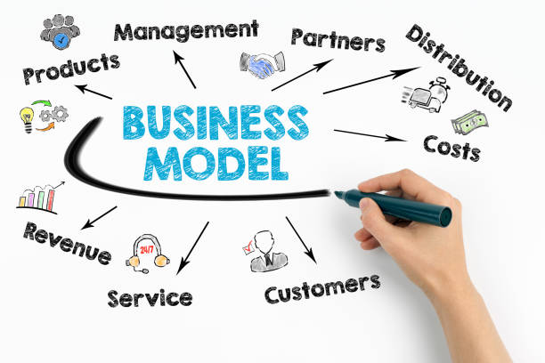

A business model is a company's plan for making, delivering and getting value. It explains the business idea by telling who the customers are what problem they have and how the business will make money. The business model helps find target customers and their problems. In todays world this often means choosing between a store or an online store and using methods like auctions or group buying to stay ahead. The business model is the key that turns an idea into a working business that makes money. The business model is, like the engine that makes an idea into an organization, a business model that works.
The traditional commerce model is what we are talking about here. This is when businesses only work from places like stores or offices. They do not sell anything on the internet.When you want to buy something from these businesses you have to go to their store or office. You have to go to look at what they have to buy something and to get what you bought.
This model is the opposite of Pure Brick. These businesses are on the internet. They do not have stores that people can visit to buy things. Every part of what the customer does. From finding out about something and looking at prices to actually paying for it. Happens on a website or a phone app. The customer journey, for these businesses happens on the website or mobile app.
This is the way that businesses work now. It combines the stores you can walk into with the website where you can buy things online. The company has stores where you can go shopping. It also sells things on the internet through its website or a special app. The store and the website usually help each other out.